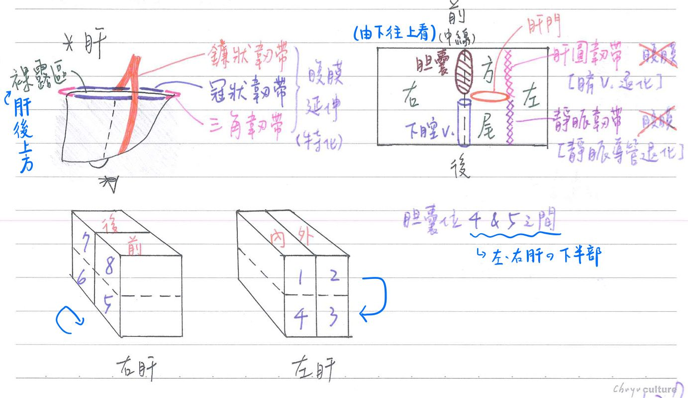
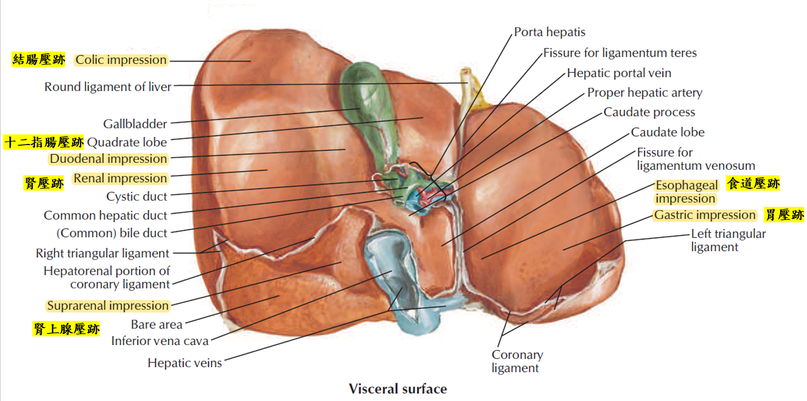
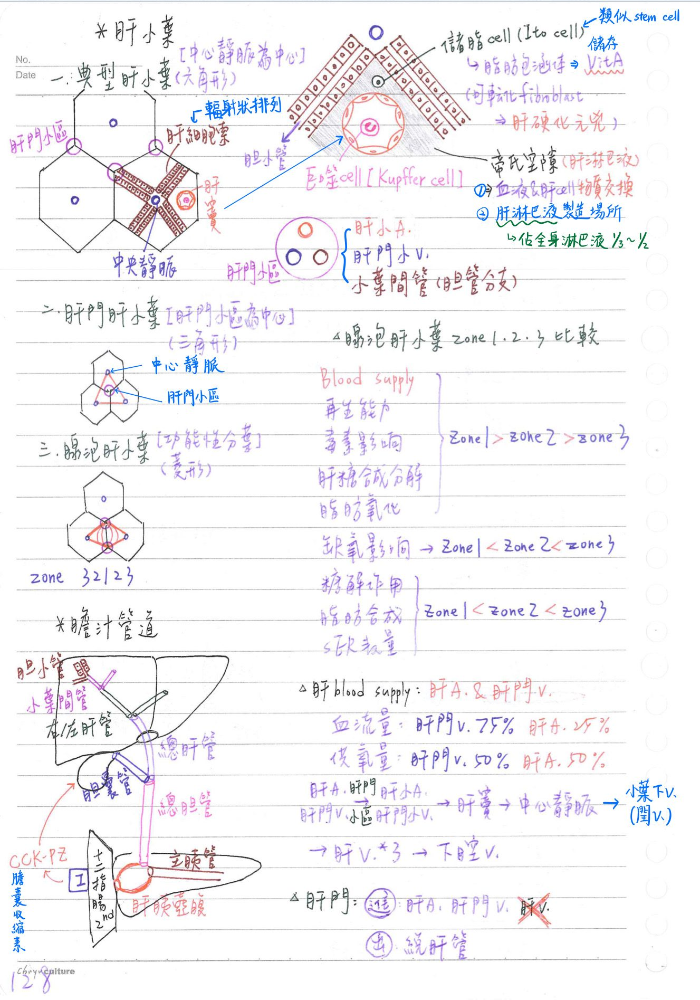
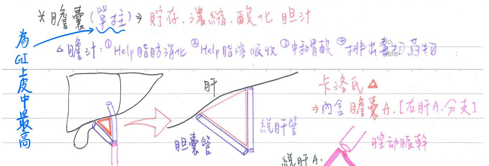
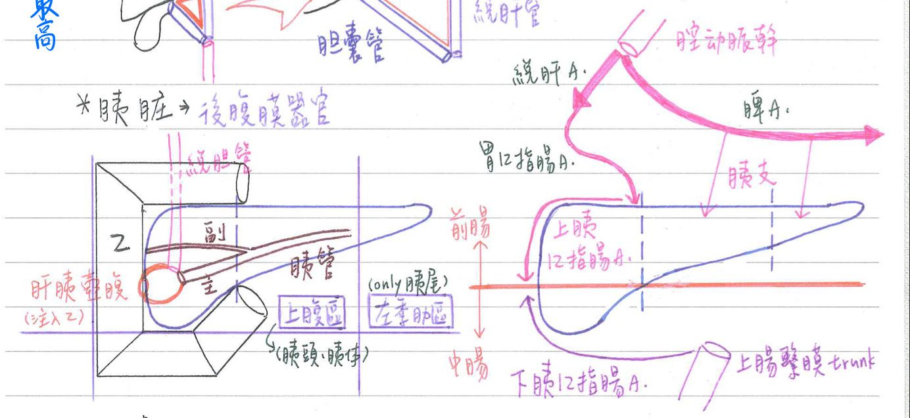

消化系統-肝、膽、胰
肝臓(liver)
- 位置&大小：右上腹(右季肋區、上腹區)；[重點]1400gm
- 為全身最大腺體[外分泌：膽汁；内分泌：體介質(somatomedin, IGF-1)等]
肝臟之韌帶(ligment)：皆為腹膜延伸
- 鐮狀韌帶(falciform l.)：游離緣含肝圓韌帶(teres l.)
- 前、後冠狀韌帶(coronary l.)
- 左、右三角韌帶(triangular l.)
- 裸露區(bare area)：肝後上方(臨橫膈處)無腹膜覆蓋之區域
→位於冠狀韌帶(&左、右三角韌帶)之間
- 裸露區(bare area)：肝後上方(臨橫膈處)無腹膜覆蓋之區域
- 裹住肝臓之腹膜稱為Glisson capsule
- ★[108-1]肝圓韌帶：臍V之退化
- ★[109-1]靜脈韌帶：靜脈導管之退化
[重點，畫圖記]肝臟外科解剖(IntemationalHepato-Pancreato-Biliary Associatin,2000)
- 一級分割(1st division)：半肝(hemiliver) x2
- 主裂(main scissura)/中肝V (middle hepaticv)→左、右半肝
- Cantlie line：膽囊窩(GB fossa)-下腔V→分隔左、右肝
- 二級分割(2nd division)：段(section) x4
- 右裂(right scissura)/右肝V→右前、後段
- 左裂(left scissura)/左肝V→左内、外段
- 三級分割(3rd division)：節(segment) x8
- 左半肝：
- 內段：上節(後節)=Couinaud 1；下節(前節)=Couinaud 4
- 外段：上節(後節)=Couinaud 2；下節(前節)=Couinaud 3
- 右半肝：
- 前段：上節 =Couinaud 8；下節 = Couinaud 5
- 後段：上節 =Couinaud 7；下節 = Couinaud 6
- 左半肝：
- 膽囊：介於Couinaud 4&5之間(左右肝的下半部)
- Couinaud 1≒尾葉
- Couinaud4≒方葉
肝細胞(hepatocyte)特徴
- 粗糙型內質網(rER)：
- 製造蛋白質(eg. albumin、fibrinogen)等
- 可製造：體介質(somatomedin, IGF-1)、血管張力素原(angiotensinogen)、紅血球生成素(erythropoietin)等激素
- 平滑型內質網(sER)：
- 製造脂質(eg. cholesterol)、膽酸(bile acid)
- 解毒(毒物、藥物)、共軛膽紅素(轉其轉為水溶性)等
- 高爾基氏體(Golgi)：製造脂蛋白(eg. VLDL)、醣蛋白(eg. transferrin)、肝醣(glycogen)等
- 脂蛋白：在電子顯微鏡下呈緻密核心囊泡(dense-cored vesicle)
- 過氧化酶體(peroxidase)：代謝酒精(alcohol)等
- 溶酶體(lysosome)：處置並貯存鐵質(以ferritin型式)等
- 粒線體(mitochondria)：使肝細胞呈嗜酸性


- ★[110-2]肝臟的內臟面(visceral surface)有：結腸壓跡、十二指腸壓跡、腎壓跡、腎上腺壓跡、食道壓跡、胃壓跡
肝小葉(lobule)
- 典型肝小葉(classic)：六角形，以中央靜脈為中心
- 肝細胞索(cords/plates of heatocytes)：作輻射排列
- 肝竇/肝竇狀隙(liver sinusoids)：位於肝細胞索之間
- 由微血管內皮細胞所 圍成之血液竇
- 內含巨噬細胞(Kupffer細胞=衛星竇狀隙巨噬細胞)→吞噬&抗原呈現功能
- 肝門小區(portal area=portal canal)：具portal triad
=膽管分枝(小葉間管)+肝A分枝+肝門V分枝+(淋巴管)備註
2020 FC p.123：有包含淋巴管
- 帝氏/迪氏空隙(space of Disse)= 圍竇狀隙間隙(perisinusoidal space)：
- 微血管內皮細胞&肝細胞間的空隙
- 血液與肝細胞交換物質之所在
- 為肝淋巴液製造之主要場所，而肝產生之淋巴液(含白蛋白、VLDL)佔全身淋巴液之1/3~1/2
- 具儲脂細胞(fat-storing cell)=肝星狀細胞(hepatic stellate cell)=伊藤細胞(Ito cell)：
- 含脂肪包涵體(lipid inclusion)：可[重點]貯存Vit. A等
- [重點]可轉化為纖維母細胞(fibroblast)，製造膠原蛋白(collagen)
→乃肝硬化(肝彌漫性纖維化)之要角 [ito cell具有類似幹細胞的功能]
- 肝門肝小葉(portal)：三角形，肝門小區為中心；強調肝臟的外分泌功能(以小葉間膽管為軸心)
- 腺泡肝小葉(acinar, Rappaport unit)：菱形；肝臟實質最小的功能單位
- 以中央靜脈、肝門小區、肝門小區、中央靜脈為頂點
- 自肝門小區向中央靜脈，依序為Zone1、2、3：
Zone 1(近) Zone 2 Zone 3(遠) 1. 再生能力 強 中 弱 2. 毒素影響 大 中 小 3. 肝糖合成、分解 先 中 後 4. 脂肪氧化 先 中 後 5. 缺氧影響 小 中 大
(缺氧就靠脂肪代謝撐過去)
易造成缺血性壞死
(小葉中央壞死, centrilobular necrosis)6. 糖解作用 弱 中 強 7. 脂肪合成 少 中 多(最易產生脂肪堆積) 8. SER數量 少 中 多

膽汁管道(bile duct)
- 膽汁分泌路徑：
肝細胞(製造膽汁)→膽小管(bile canalicli)：肝細胞之間的空腔
→小葉間管(interlobular ductule)→左/右肝管(hepatic duct)
→總肝管(common hepatic duct)→膽囊管(cystic duct)
→膽囊(gall bladder；儲存、濃縮、酸化膽汁)→膽囊管
→總膽管(common bile duct)
→肝胰壺腹[hepatopancreatic ampulla(Vater)]→十二指腸
- 膽小管：由相鄰肝細胞之細胞膜形成(並無特殊上皮細胞圍繞)
- 總肝管(CHD)：由左、右肝管匯集而成，通過肝門(hilum)
- 總膽管(CBD)：由總肝管&膽囊管匯集而成
- 肝胰壺腹(ampulla of Vater)：由總膽管&主胰管匯集而成
- 歐第氏(Oddi's)括約肌：肝胰壺腹出口之括約肌
- 大十二指腸乳頭(major/great duodenal papilla)
- 肝胰壺腹出口，造成★十二指腸(第2部份)之突出
- 為前腸與中腸之分界(肝胰壺腹)
- 小十二指腸乳頭(minor/lesser duodenal papilla)：
- 副胰管出口；造成十二指腸(第2部份)之突出；位於大乳頭之上方
肝臓-血管供應：有二套
- 肝動脈(hepatic artery)：為充氧血(氧氣多)
- 肝門靜脈(portal vein)：為缺氧血(養份多)
- 肝血流量：1500cc/min
- [重點]正常肝臓血液供應：肝門V(75%)；肝A(25%)
- [重點]正常肝臓供氧量：肝門V(50%)；肝A(50%)
- 肝細胞癌(HCC)：血液供應幾乎僅源自肝A，故可經肝動脈注入栓塞物&抗癌藥物(TACE)
→殺死癌細胞；且較少損及正常肝細胞
- 肝門靜脈高壓：可導致食道靜脈曲張等併發症
- 路徑：
肝A & 肝門V→肝小動脈(hepatic arteriole) & 肝門小靜脈(portal venule)
→肝竇(sinusoids；血液竇)→肝小葉中心靜脈(central veinule)
→小葉下靜脈(sublobular vein)=閏靜脈(intercalated vein)
→肝靜脈(hepaticvein；3條)→下腔靜脈(IVC)
- 肝門(hilum=portahepatis)：
- 進入肝臟：肝A、肝門V
- 離開肝臟：總肝管
膽囊(gall bladder)
- 解剖：由右前下方，向左後上方依序為：
膽囊底(fundus)→膽囊體(body)→膽囊頸(neck)[連接膽囊管]
- 功能：貯存(30~50c.c)、濃縮、酸化膽汁
- 膽汁功能：
- 幫助脂肪的消化(但膽汁不具脂肪酶)&吸收(藉bile acid之乳化作用)
- 中和胃酸(HCO3-之作用)
- 排出毒物、藥物等(經肝細胞解毒、代謝後溶於膽汁中)

膽囊-解剖：分四層
- 黏膜層(mucosa)：★[109-1]單層柱狀上皮(其柱狀高度為消化道中最高者)；固有層(含豐富微血管，但無淋巴管)
- 雖源自前腸(foregut-derived)，但★[107-2]無典型之黏膜肌層(muscularis mucous)&黏膜下層(submucosa)
- ★[110-1]駱阿氏竇(Rokitansky-Aschoff sinuses)：黏膜憩室(diverticula of mucosa)
- 肌肉層(muscularis externa)：平滑肌隨機排列，無分層
- 外膜層(結締組織層)(adventitia)：和肝臟表面相連處；含淋巴管、神經
- 漿膜層(serosa)：未跟肝臟表面相連處；表面覆蓋臟層腹膜(一層間皮細胞+薄疏鬆結締組織)
[重點]膽囊-卡洛氏三角(triangle of Calot)
- 邊界：
- 上緣：肝
- 外緣：膽囊管
- 內緣：總肝管
- 內含：膽囊A(右肝A之分枝)，為膽囊切除術之重要界標
胰臓(pancreas)
胰臟-構造：後腹膜器官
- 胰頭(head)：十二脂腸C環內側(上腹區)
- 鉤狀突(uncinated process)：胰頭位於上腸繫膜A/V之左側後方部位
- 胰頸(neck)：胰頭與胰體之交接處；在上腸繫膜A之前方
- 上腸繫膜V在胰頸後方和脾V匯集成肝門V
- 胰體：胃及橫結腸後方；在L2高度(上腹區)
- 胰尾：脾內側；穿入脾腎韌帶(左季肋區)
胰臟-腺泡→胰液：外分泌(佔99%)
- 副胰管(Santorini)：獨立開口於小12指腸乳頭
- 主胰管(Wirsung)：與總膽管形成肝胰壺腹→注入大12指腸乳頭

胰臟-組織學構造
- 腺泡細胞(acinar cell)：嗜鹼性(因為rER)；漿液性(serous)
- →腺泡中央細胞(centroacinar cell)：胰臟特有，鱗狀上皮細胞
- 腺泡中央細胞可視為腺泡內之閏管細胞
- →閏管/間管(intercalated duct)：吸收Cl-、分泌HCO3-
- →小葉内管(intralobular duct)：無紋管之條紋，吸收Na+、分泌K+
- →小葉間管(interlobular duct)
- →主胰管、副胰管(pancreaticduct)
- 膽囊收縮素(CCK-PZ)：刺激腺泡細胞→促消化酶分泌
- 腸促胰液素(secretin)：刺激導管細胞→促HCO3-分泌
<cf>唾液腺-閏管細胞：吸收Cl-、分泌HCO3-
- →腺泡中央細胞(centroacinar cell)：胰臟特有，鱗狀上皮細胞
胰臟-胰島(蘭氏小島)→激素:內分泌(佔胰臟1%)
- α cell(15~20%)：升糖激素(glucagon)
- β cell(60~70%)：胰島素(insulin)
- γ cell(5~10%)：體制素(somatostatin)
- 少數細胞：
- G cell：胃泌激素(Gastrin)
- D1 cell：腸泌血管擴張胜肽(VIP)
- EC(enterochromaffin) cell：5-HT、substance P
- PP(F)：pancreatic polypeptide
胰臟-血液供應：大部分是前腸，少部份是中腸
- 胰頭：
- 上十二指腸A←胃十二指腸A←總肝A←腔動脈幹
- 下十二指腸A←上腸繫膜動脈幹
- 胰體/尾：胰支←脾A←腔動脈幹